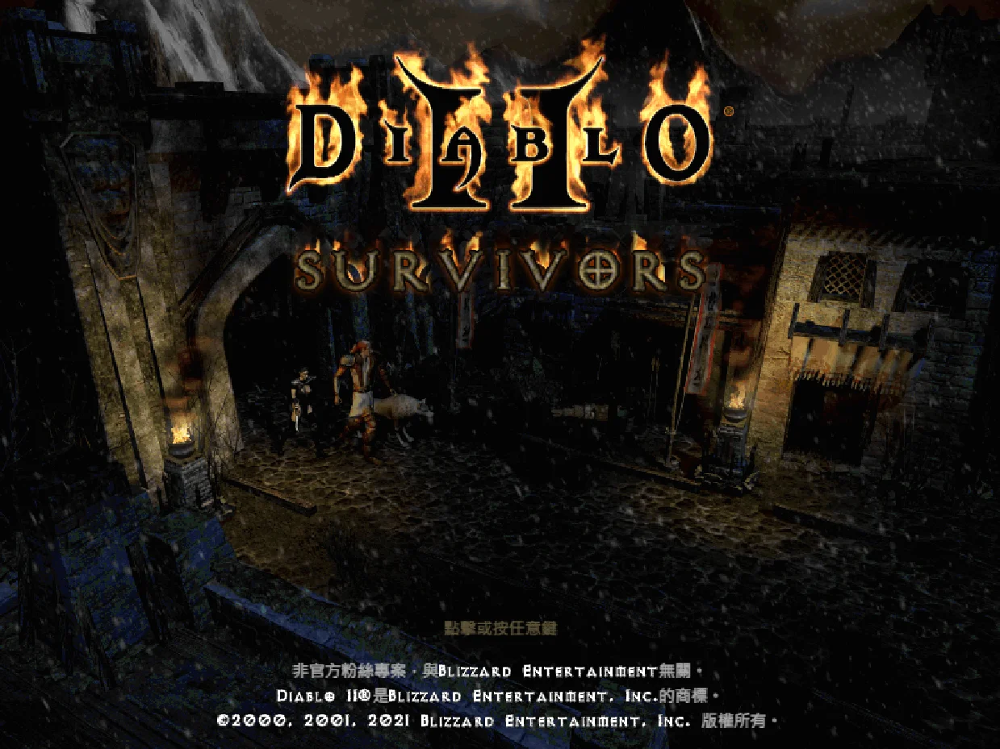
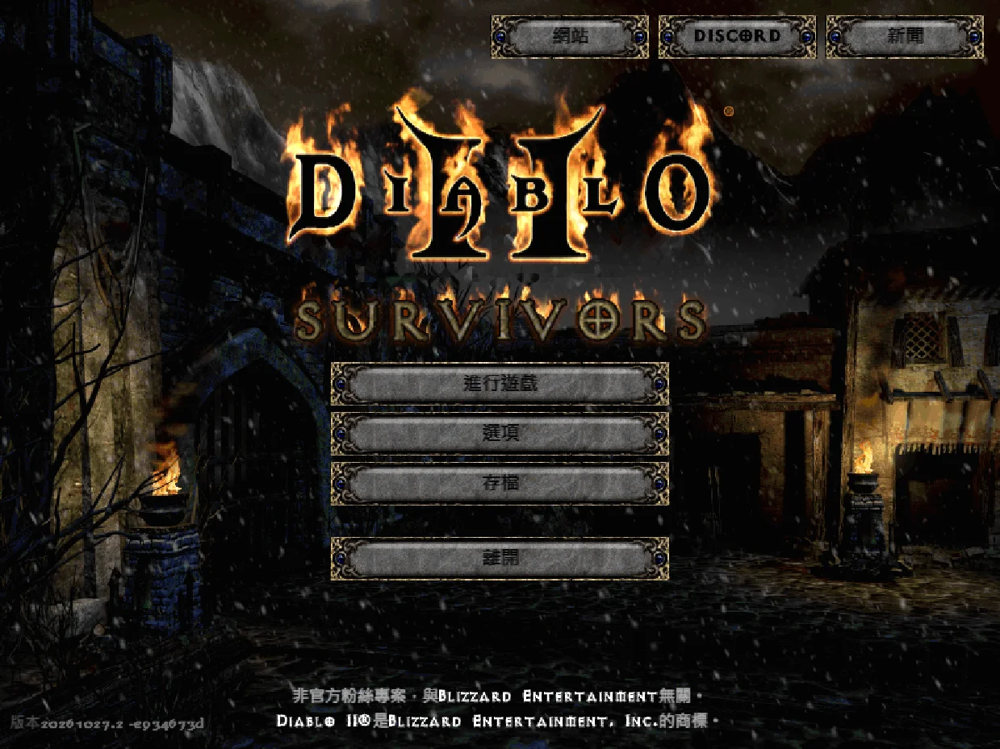
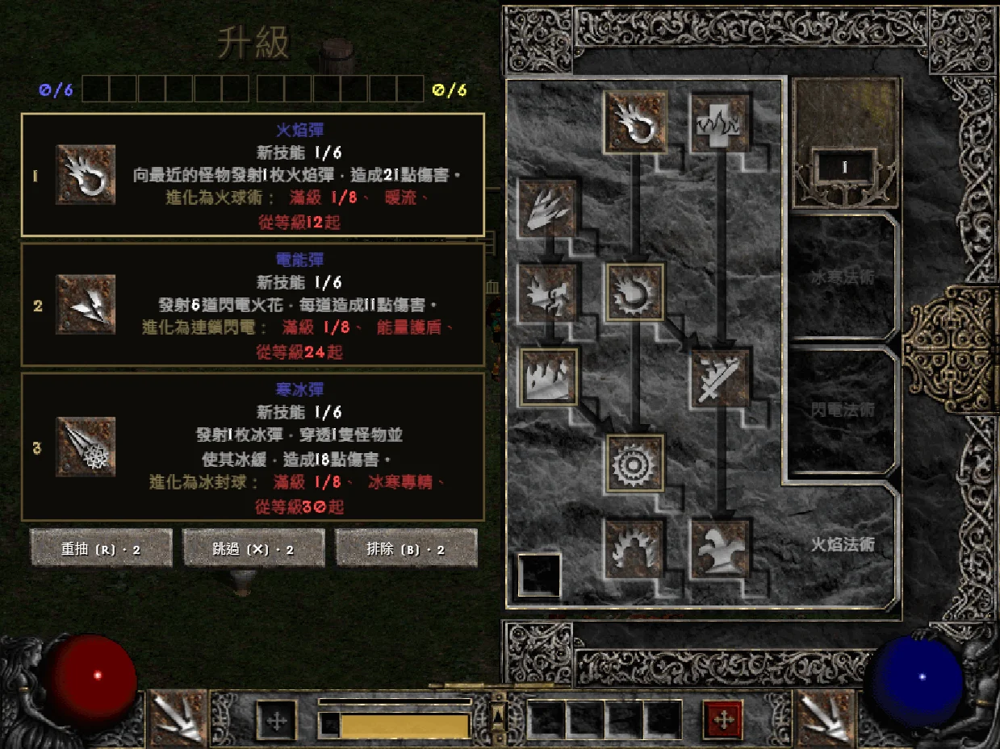
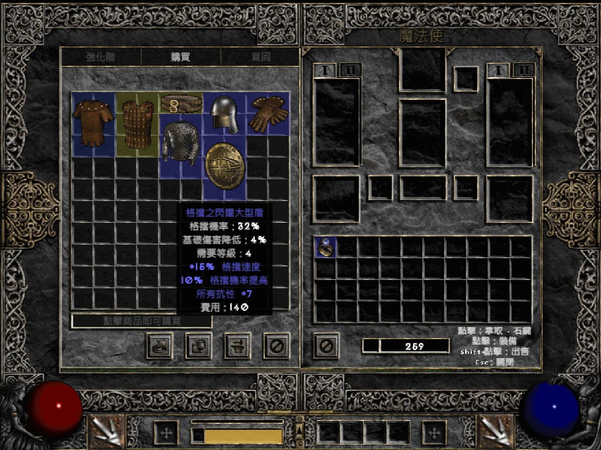
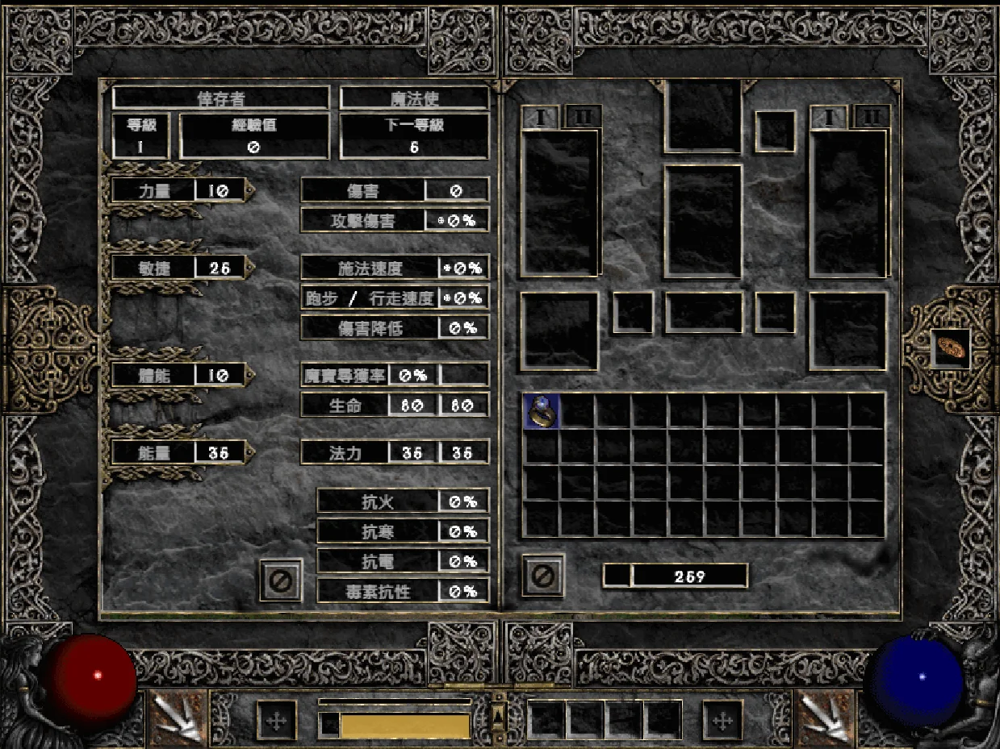
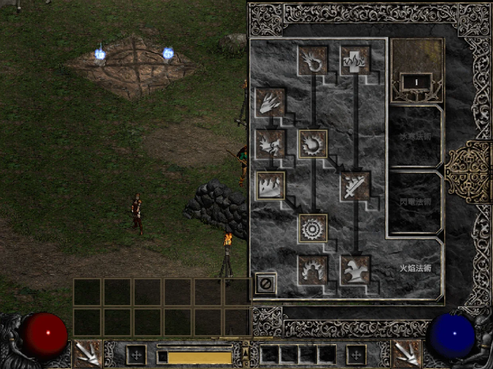
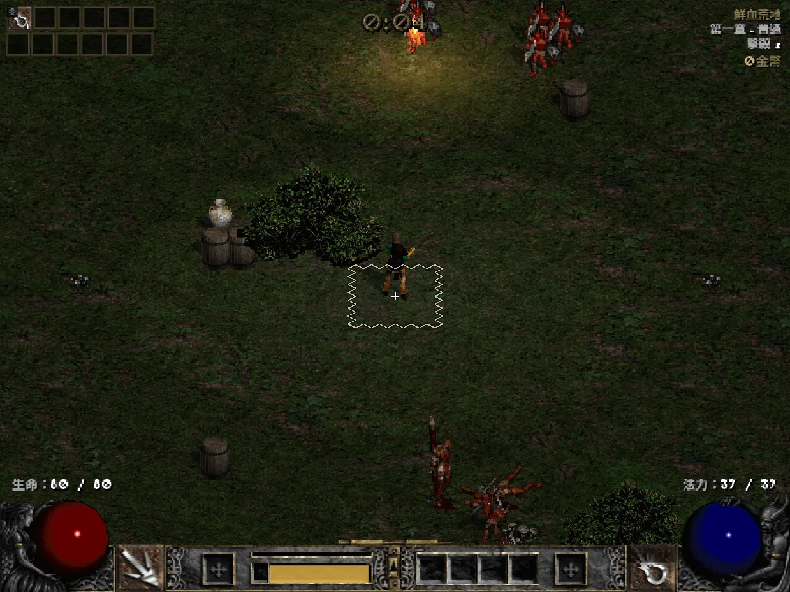
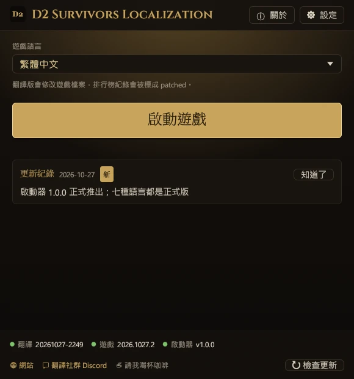
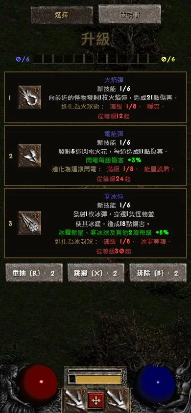

D2 Survivors
原作：framara
免費的非官方粉絲遊戲，以《暗黑破壞神 II》為舞台的倖存者類遊戲。本翻譯專案與原作者無關，遊戲本身的問題請到官方管道回報。
非官方玩家翻譯
選擇你的版本
把 Diablo 2 Survivors（D2 Survivors／暗黑2倖存者、暗黑破壞神2倖存者）遊戲本身翻成繁體中文。不是中文攻略，而是介面、技能、物品、怪物、升級卡全部變成中文，用語以《暗黑破壞神 II：獄火重生》官方譯名為準。啟動器一鍵安裝、自動更新，隨時可以還原原版。
把 Diablo 2 Survivors（D2 Survivors／暗黑2倖存者）遊戲本身翻成中文，不是攻略。在瀏覽器玩網頁版時，按一下書籤就換成中文（繁體）、中文（簡體）、日文、德文、法文、俄文或波蘭文，用語以《暗黑破壞神 II：獄火重生》官方譯名為準。不用安裝任何東西，電腦和手機都能割草。









遊戲畫面：D2 Survivors（framara），使用玩家自己的 Diablo II 檔案
這個專案只提供翻譯，不含任何遊戲檔案。開始之前，請先從下面的官方管道取得 D2 Survivors 和《暗黑破壞神 II》。
原作：framara
免費的非官方粉絲遊戲，以《暗黑破壞神 II》為舞台的倖存者類遊戲。本翻譯專案與原作者無關，遊戲本身的問題請到官方管道回報。
Blizzard Entertainment
D2 Survivors 會讀取你電腦上的《暗黑破壞神 II》美術與音效，所以需要自己擁有《暗黑破壞神 II：獄火重生》，或《暗黑破壞神 II》＋《毀滅之王》（1.14 版）。
譯名參考：技能、物品、怪物、區域等名稱沿用《暗黑破壞神 II：獄火重生》官方繁體中文譯名；其餘文字由本專案翻譯。
中文（繁體）、中文（簡體）、日文、德文、法文、俄文和波蘭文都已正式推出，可以直接選。
翻譯、語言和啟動器的更新。啟動器和書籤每次開啟都會拿到最新的翻譯，不用重新下載。
以下是 D2 Survivors 作者寫的更新說明，我們只負責翻譯。
以下是 D2 Survivors 作者寫的更新說明，我們只負責翻譯。
不需要動手改任何遊戲檔案，全部交給啟動器。遊戲要先關掉。啟動器的畫面會用你選的語言顯示。
從 D2 Survivors 官網下載桌面版，照遊戲的設定畫面指定《暗黑破壞神 II》的位置，確認能正常進入遊戲。
下載 d2s-launcher.exe，放在任何資料夾都可以，不需要安裝。
第一次開啟會先出現語言畫面，每種語言都用它自己的文字寫。點你的語言、按「→」，啟動器的畫面和遊戲的翻譯都會用這個語言。
①「遊戲」：找到 D2 Survivors（預設在 %LOCALAPPDATA%\Programs\D2 Survivors，裝在別處就按「選擇資料夾…」）。②「Diablo II」：找你電腦上的《暗黑破壞神 II：獄火重生》或經典版，找不到也可以按「略過」。③「完成」：可以按「在桌面建立捷徑」，再按「啟動遊戲」。第一次會下載翻譯，並自動備份原版 app.asar。
預設每次啟動都會抓最新的翻譯（「設定」裡的「啟動時自動更新翻譯」），遊戲更新後也會自動重新套上。想換語言，在主畫面的「遊戲語言」換就好。
app.asar 就會換回原本的檔案。%LOCALAPPDATA%\D2SurvivorsLauncher 資料夾。想自己做捷徑的話，把下面這行設成捷徑的目標，按兩下就直接用指定語言開遊戲，不會出現啟動器視窗。（啟動器的「在桌面建立捷徑」會開視窗並直接啟動遊戲。）
d2s-launcher.exe --launch --lang zh-TW--launch--play--lang <id>--no-update--update--restore--self-update--status在 d2survivors.lol 用瀏覽器玩？加一個書籤就能換成中文（繁體）、中文（簡體）、日文、德文、法文、俄文或波蘭文，跟啟動器用同一份翻譯，不用安裝任何東西，電腦和手機都能用。
D2 中文化 ← 拖到書籤列
javascript:import('https://cycleapple.github.io/d2survivors-localization/web/d2zh.js').then(m=>m.default('zh-TW')).catch(e=>alert('D2 Survivors Localization: '+e))按上面的「複製書籤程式碼」。
在 Safari 打開這一頁，按分享，選「加入書籤」並儲存。
較新的 iOS：分享按鈕在「⋯」選單裡。
打開書籤，按「編輯」，點剛剛加入的書籤。
較新的 iOS：書籤在「⋯」選單裡。
名稱改成「D2 中文化」，網址整個換成程式碼，按「完成」。
打開 d2survivors.lol 首頁，從書籤點「D2 中文化」。
首頁比較省記憶體、載入較快，手機特別建議；在遊戲頁面 /play/ 點也可以。
按上面的「複製書籤程式碼」。
在 Chrome 打開這一頁，按 ⋮，再按最上面一排的 ☆。
按 ⋮ →「書籤」，再按新書籤右邊的 ⋮ →「編輯」。
名稱改成「D2 中文化」，網址整個換成程式碼，按 ← 儲存。
打開 d2survivors.lol 首頁，在網址列輸入「D2 中文化」，點有 ☆ 的建議。
從書籤清單點不會執行。首頁比較省記憶體、載入較快；在遊戲頁面 /play/ 點也可以。
示意畫面僅供參考，按鈕的文字和位置可能因系統版本而略有不同。
不是。這是玩家自製的非官方翻譯，與 D2 Survivors 開發者及 Blizzard Entertainment 都沒有關係。
程式的部分是。啟動器、書籤、網站和工具的原始碼都放在 GitHub，用 MIT 授權。啟動器由 GitHub Actions 從公開的原始碼自動編譯（編譯紀錄），每個 Release 都附 d2s-launcher.exe.sha256，可以自己核對。
翻譯資料（字典）目前沒有開放授權，保留所有權利，詳見 dict/LICENSE。字典裡沿用的官方譯名屬於 Blizzard Entertainment。
可以。啟動器目前只有 Windows 版；Mac、Linux 和手機請在瀏覽器玩網頁版，再用「瀏覽器版」分頁裡的書籤換成中文。
不會。啟動器只替換遊戲資料夾裡的 resources\app.asar，存檔放在別的地方，不會被讀取或修改。替換前會先備份原版。
不會。存檔照常存在瀏覽器裡。書籤只在目前開著的頁面裡換掉遊戲的文字，不會留下任何修改，重新整理就回到原版。
遊戲更新會換掉 app.asar，翻譯會暫時消失。照常從啟動器或捷徑開遊戲就會重新套上。
如果新版本改動太大、修改規則對不上，啟動器不會硬改檔案，而是先用原版開遊戲，並顯示「遊戲剛更新，翻譯修正中」。翻譯修好後，下次開啟就會自動套回去，什麼都不用做。
書籤每次都會先檢查修改規則對不對得上遊戲的新版本。對不上時會顯示「中文化需要更新」，不會啟動，原版遊戲也不受影響；先照常玩英文版，等這裡更新即可。
翻譯借用遊戲內建的韓文語言位置，所以套用中文後，選單裡的韓文會顯示成「繁體中文」。想玩韓文版，在啟動器選「한국어 (원본)」再啟動。
Android Chrome 從書籤清單點不會執行，要在網址列輸入書籤名稱「D2 中文化」，再點下面出現的書籤。iPhone 請在首頁或遊戲頁面打開 Safari 的書籤清單點選。
也請確認書籤的網址整個換成了書籤程式碼，開頭是 javascript:。
通常是手機記憶體不夠，瀏覽器把分頁重新載入了。可以這樣改善：
重新整理後再點一次書籤就能繼續，進度照遊戲本身的存檔。
不行。從主畫面打開的是全螢幕畫面，沒有網址列，也沒有書籤可以按；翻譯也不會留到下次，重新整理或重新打開都會回到原版。請在 Safari 或 Chrome 的分頁裡玩，每次打開或重新整理後再按一次書籤。
遊戲裡的文字都已翻譯，也在遊戲裡檢查過沒有漏翻。如果看到英文，通常是遊戲剛更新、加了新的文字；翻譯會在之後的更新補上，啟動器會自動下載。一直沒補上的話，歡迎回報。
遊戲裡的文字都已翻譯，也在遊戲裡檢查過沒有漏翻。如果看到英文，通常是遊戲剛更新、加了新的文字；翻譯會在之後的更新補上，書籤每次都載入最新的翻譯。一直沒補上的話，歡迎回報。
瀏覽器版會。用書籤翻譯時，成績照常上傳排行榜，普通和專家級都一樣，紀錄會標示實際使用的語言（例如 zh-TW）。
電腦版選翻譯語言時，遊戲會把紀錄標成 patched；要正常上榜，請在啟動器的「遊戲語言」選 English。
啟動器沒有程式碼簽章（要每年付費購買），在下載的人還不多之前，Windows SmartScreen 都會跳出這個警告。
按「其他資訊」，再按「仍要執行」就可以了，之後不會再問。請只從本站或 GitHub Releases 下載；每個 Release 都附有 d2s-launcher.exe.sha256，可以用 certutil -hashfile d2s-launcher.exe SHA256 核對。
瀏覽器下載時如果說這個檔案不常被下載，在下載清單的選單裡選「保留」。
目前不行。遊戲本身只允許英文字母和韓文作為角色名稱。
錯字、漏譯、書籤或啟動器的問題，請到中文化社群 Discord 回報，那裡也會公告最新消息。
翻譯錯誤和程式問題也可以到 GitHub Issues 回報。
遊戲本身的問題（跟翻譯無關的）請到 D2 Survivors 遊戲官方 Discord（英文）回報。
歡迎！所有語言都已正式推出，但翻譯總有可以更好的地方。看到不自然的說法或錯字，特別歡迎母語玩家告訴我們。請到這裡聯絡我們。